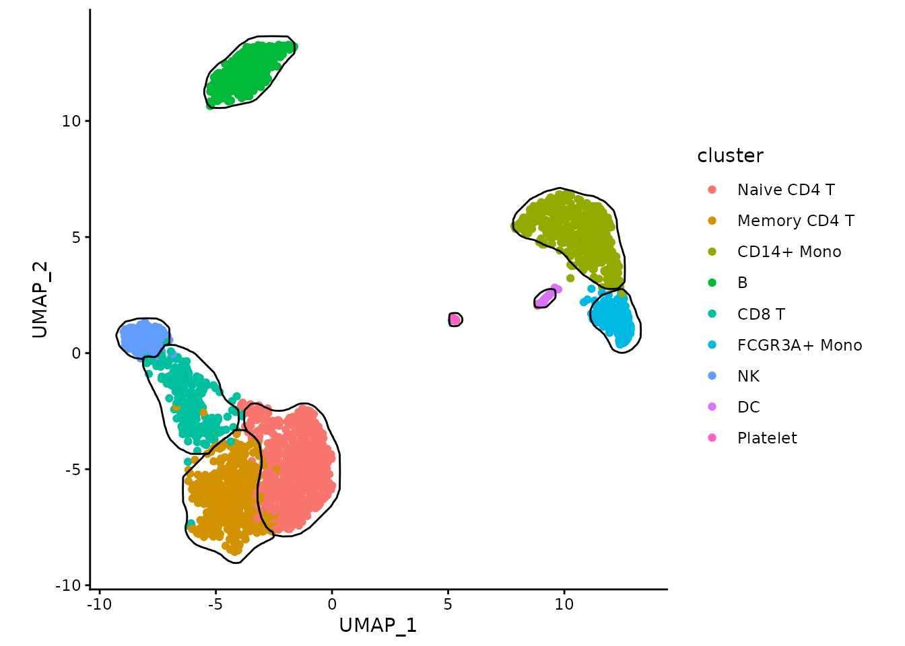
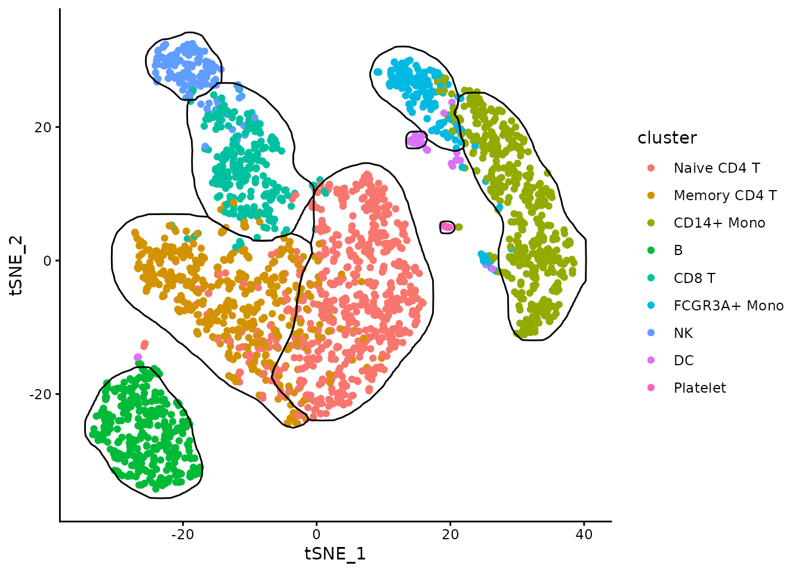
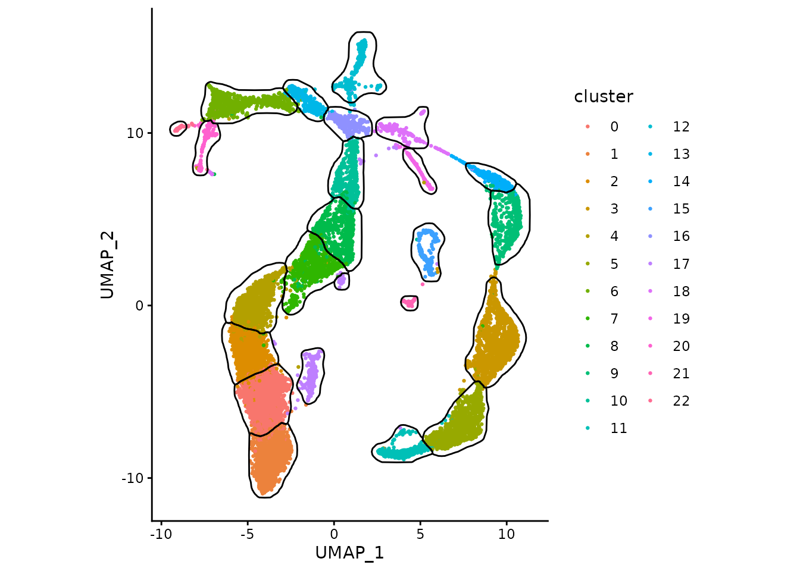
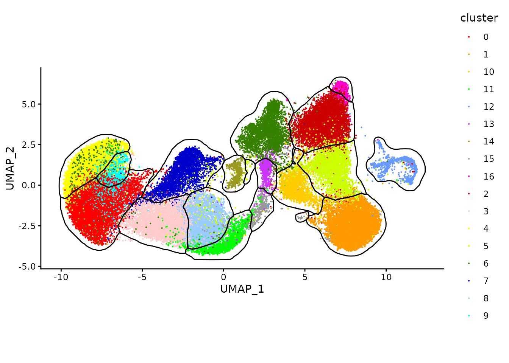
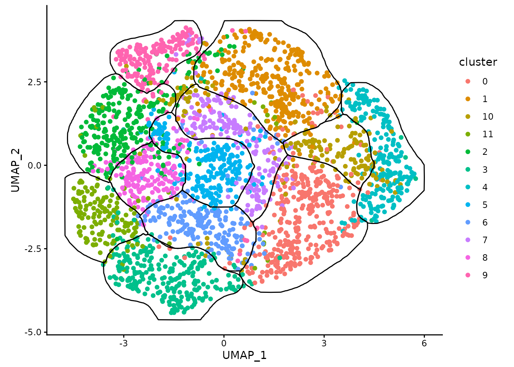

PBMC-3K UMAP
example <- readRDS(url("https://alserglab.wustl.edu/files/mascarade/examples/pbmc3k_umap.rds"))
data <- data.table(example$dims,
cluster=example$clusters)
maskTable <- generateMask(dims=example$dims,
clusters=example$clusters)
ggplot(data, aes(x=UMAP_1, y=UMAP_2)) +
geom_point(aes(color=cluster)) +
geom_path(data=maskTable, aes(group=group)) +
coord_fixed() +
theme_classic()
PBMC-3K t-SNE
example <- readRDS(url("https://alserglab.wustl.edu/files/mascarade/examples/pbmc3k_tsne.rds"))
data <- data.table(example$dims,
cluster=example$clusters)
maskTable <- generateMask(dims=example$dims,
clusters=example$clusters)
ggplot(data, aes(x=tSNE_1, y=tSNE_2)) +
geom_point(aes(color=cluster)) +
geom_path(data=maskTable, aes(group=group)) +
coord_fixed() +
theme_classic()
Aya
example <- readRDS(url("https://alserglab.wustl.edu/files/mascarade/examples/aya.rds"))
data <- data.table(example$dims,
cluster=example$clusters)
maskTable <- generateMask(dims=example$dims,
clusters=example$clusters)
ggplot(data, aes(x=UMAP_1, y=UMAP_2)) +
geom_point(aes(color=cluster), size=0.5) +
geom_path(data=maskTable, aes(group=group)) +
coord_fixed() +
theme_classic()
Chia-Jung
example <- readRDS(url("https://alserglab.wustl.edu/files/mascarade/examples/chiajung1.rds"))
data <- data.table(example$dims,
cluster=example$clusters)
maskTable <- generateMask(dims=example$dims,
clusters=example$clusters)
ggplot(data, aes(x=UMAP_1, y=UMAP_2)) +
geom_point(aes(color=cluster), size=0.1) +
scale_color_ucscgb() +
geom_path(data=maskTable, aes(group=group)) +
coord_fixed() +
theme_classic()
example <- readRDS(url("https://alserglab.wustl.edu/files/mascarade/examples/chiajung2.rds"))
data <- data.table(example$dims,
cluster=example$clusters)
maskTable <- generateMask(dims=example$dims,
clusters=example$clusters)
ggplot(data, aes(x=UMAP_1, y=UMAP_2)) +
geom_point(aes(color=cluster)) +
geom_path(data=maskTable, aes(group=group)) +
coord_fixed() +
theme_classic()
Session info
## R version 4.5.2 (2025-10-31)
## Platform: x86_64-pc-linux-gnu
## Running under: Ubuntu 24.04.3 LTS
##
## Matrix products: default
## BLAS: /usr/lib/x86_64-linux-gnu/openblas-pthread/libblas.so.3
## LAPACK: /usr/lib/x86_64-linux-gnu/openblas-pthread/libopenblasp-r0.3.26.so; LAPACK version 3.12.0
##
## locale:
## [1] LC_CTYPE=C.UTF-8 LC_NUMERIC=C LC_TIME=C.UTF-8
## [4] LC_COLLATE=C.UTF-8 LC_MONETARY=C.UTF-8 LC_MESSAGES=C.UTF-8
## [7] LC_PAPER=C.UTF-8 LC_NAME=C LC_ADDRESS=C
## [10] LC_TELEPHONE=C LC_MEASUREMENT=C.UTF-8 LC_IDENTIFICATION=C
##
## time zone: UTC
## tzcode source: system (glibc)
##
## attached base packages:
## [1] stats graphics grDevices utils datasets methods base
##
## other attached packages:
## [1] ggsci_4.2.0 ggplot2_4.0.1 data.table_1.18.0 mascarade_0.3.0
##
## loaded via a namespace (and not attached):
## [1] sass_0.4.10 generics_0.1.4 spatstat.explore_3.6-0
## [4] tensor_1.5.1 spatstat.data_3.1-9 lattice_0.22-7
## [7] digest_0.6.39 magrittr_2.0.4 spatstat.utils_3.2-1
## [10] evaluate_1.0.5 grid_4.5.2 RColorBrewer_1.1-3
## [13] fastmap_1.2.0 jsonlite_2.0.0 Matrix_1.7-4
## [16] spatstat.sparse_3.1-0 scales_1.4.0 tweenr_2.0.3
## [19] textshaping_1.0.4 jquerylib_0.1.4 abind_1.4-8
## [22] cli_3.6.5 rlang_1.1.7 polyclip_1.10-7
## [25] withr_3.0.2 cachem_1.1.0 yaml_2.3.12
## [28] otel_0.2.0 spatstat.univar_3.1-5 tools_4.5.2
## [31] deldir_2.0-4 dplyr_1.1.4 spatstat.geom_3.6-1
## [34] vctrs_0.6.5 R6_2.6.1 lifecycle_1.0.5
## [37] fs_1.6.6 htmlwidgets_1.6.4 MASS_7.3-65
## [40] ragg_1.5.0 pkgconfig_2.0.3 desc_1.4.3
## [43] pkgdown_2.2.0 pillar_1.11.1 bslib_0.9.0
## [46] gtable_0.3.6 glue_1.8.0 ggforce_0.5.0
## [49] systemfonts_1.3.1 xfun_0.55 tibble_3.3.1
## [52] tidyselect_1.2.1 knitr_1.51 goftest_1.2-3
## [55] farver_2.1.2 nlme_3.1-168 spatstat.random_3.4-3
## [58] htmltools_0.5.9 labeling_0.4.3 rmarkdown_2.30
## [61] compiler_4.5.2 S7_0.2.1